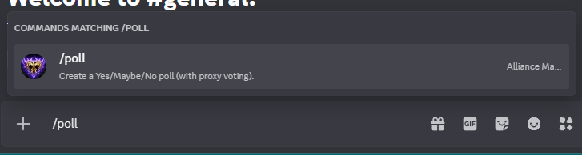
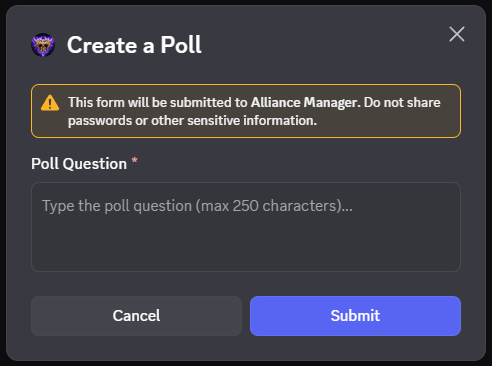
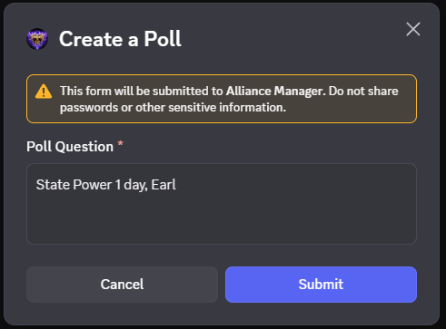
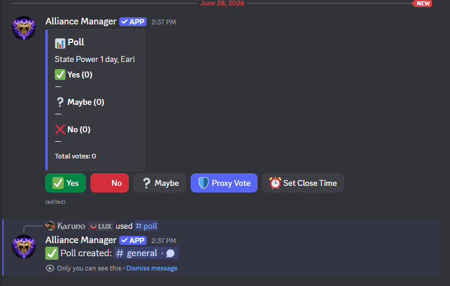
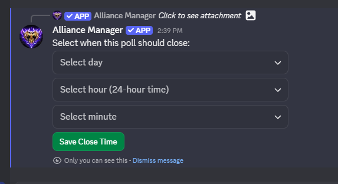
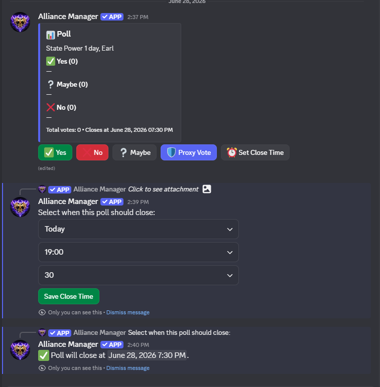
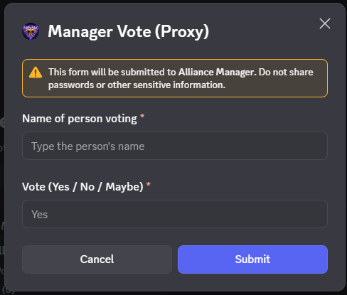
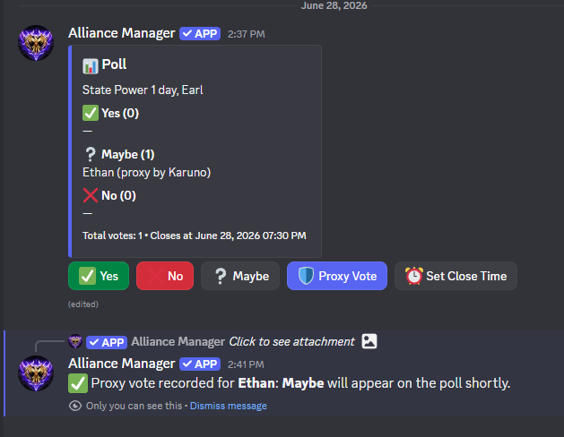

La función de encuestas permite a los líderes y miembros crear encuestas dentro de su alianza.
Las opciones de respuesta disponibles incluyen Sí/No/Tal vez y están más adaptadas para las convocatorias de títulos.
Un uso excelente de esta función es crear una encuesta para las convocatorias de títulos y permitir que los miembros voten si van a optar por el título de ese evento específico o no.
Las encuestas también ofrecen una opción de voto delegado (proxy) para los miembros que no están en Discord pero desean votar.
Asimismo, las encuestas cuentan con una función de temporizador que se puede activar para finalizar la encuesta automáticamente tras un periodo de tiempo determinado.
Cualquier jugador que intente votar en una encuesta bloqueada recibirá un mensaje indicando que la encuesta está bloqueada.
Otras funciones del bot incluyen el gestor de "Namekeeper" (administrador de nombres) y la gestión de votos delegados.
El rol de gestor de "Namekeeper" permite al usuario asignado administrar el bot y actualizar los apodos y el MVP.
La función de votos delegados permite al usuario asignado votar en nombre de los miembros que no están en Discord pero desean participar.
Solo el rol de gestor de "Namekeeper" puede anular el bloqueo de una encuesta y emitir un voto delegado por un miembro.
Las instrucciones y el proceso de las encuestas cambiarán próximamente. Por ello, de momento solo se incluyen los pasos ilustrados. Esta página se actualizará una vez que se implemente la nueva actualización.
Ten en cuenta que los roles integrados creados por el bot tienen dos funciones específicas en relación con las encuestas: el rol de gestor de "Namekeeper" puede anular el bloqueo de una encuesta y emitir un voto delegado por un miembro, mientras que el rol de votos delegados solo permite emitir votos delegados durante el periodo en que la encuesta está abierta.
Si la votación está bloqueada, un miembro con el rol de voto por delegación no podrá anular dicho bloqueo.Lo ideal es asignar el rol de «Namekeeper Manager» únicamente a miembros de confianza o al administrador del servidor (es decir, al líder de la alianza). Actualmente, el comando de encuestas se utiliza para votaciones nominales, pero la próxima actualización permitirá una mayor personalización y mantendrá la opción de voto delegado (proxy) que Discord no ofrece.
Para crear una encuesta, utiliza el comando "/poll".

Tras escribir el comando, se te pedirá que introduzcas la pregunta de la encuesta.


La encuesta se crea y aparece un mensaje efímero confirmando la creación y el canal donde se ha publicado.

Se puede utilizar el botón "Set Close Time" (Establecer hora de cierre) para cerrar la encuesta a una hora específica.

Mensaje de confirmación que muestra la fecha y hora en que se cerrará la encuesta.

Registro de voto delegado mediante el nombre y la elección realizada.

Mensaje de confirmación que indica que se ha registrado el voto delegado.

Importante: Todos los votos tardan 60 segundos en aparecer en el mensaje. La intención es que el bot recopile tantos votos como sea posible antes de actualizar el mensaje, evitando así un uso excesivo de llamadas a la API.
← Volver al inicio